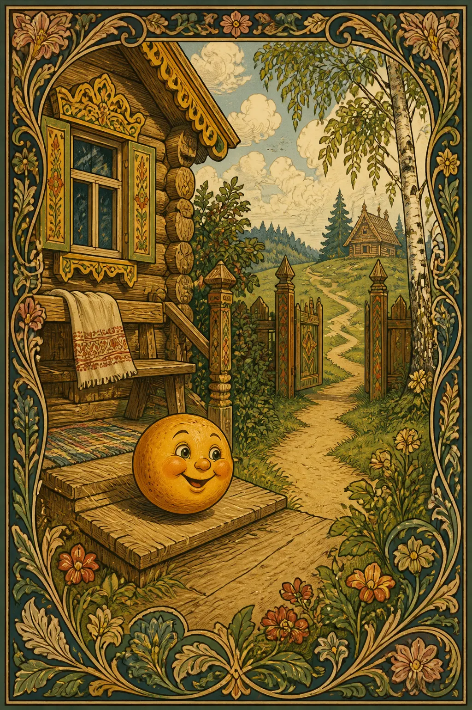
Русские народные сказкиСлушать
Колобок
Оценку нужно обновить · Популярность: Очень высокая · Чтение: 3 мин чтения
Персонажи: Колобок
19 сказок
Русские народные сказки на сайте «Сказки от Каму»: 19 сказок для семейного чтения, сказок на ночь и чтения вслух, с аудио, иллюстрациями и чтением онлайн.

Оценку нужно обновить · Популярность: Очень высокая · Чтение: 3 мин чтения
Персонажи: Колобок

Оценка отсутствует · Популярность: Высокая · Чтение: 5 мин чтения
Персонажи: Хаврошечка

Оценку нужно обновить · Популярность: Очень высокая · Чтение: 1 мин чтения
Персонажи: Дед, Бабка +5
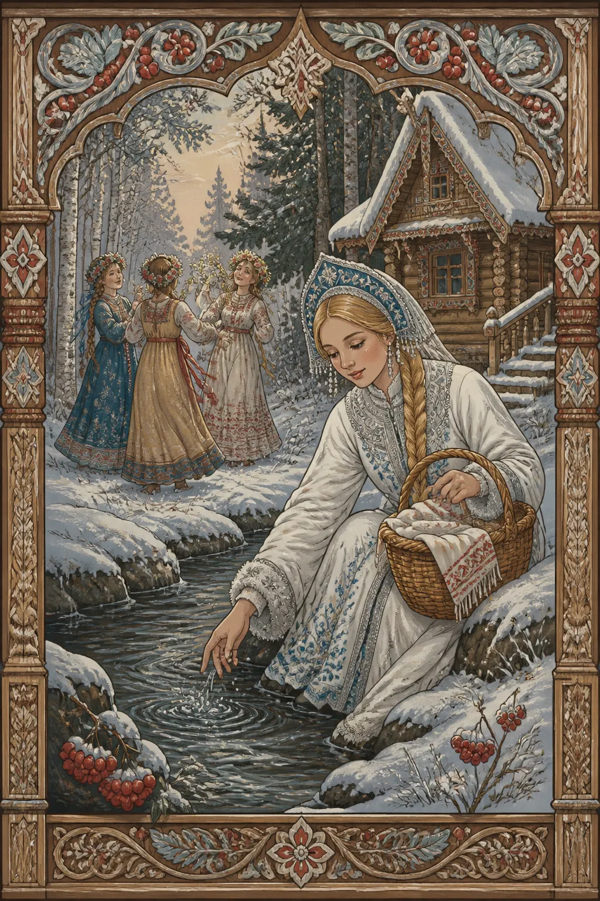
Оценка отсутствует · Популярность: Высокая · Чтение: 3 мин чтения
Персонажи: Снегурочка
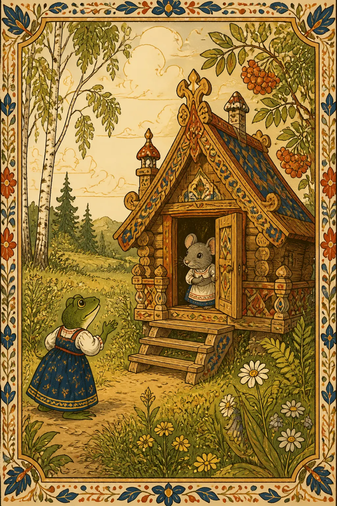
Оценку нужно обновить · Популярность: Очень высокая · Чтение: 3 мин чтения
Персонажи: Животные

Оценка отсутствует · Чтение: 4 мин чтения
Персонажи: кот, петух +1
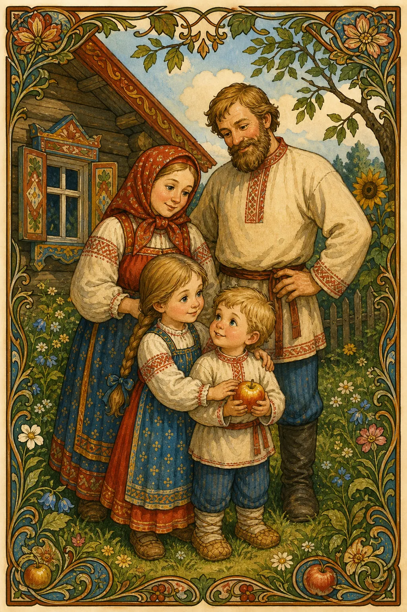
Оценка отсутствует · Чтение: 3 мин чтения
Персонажи: девочка, братец +2
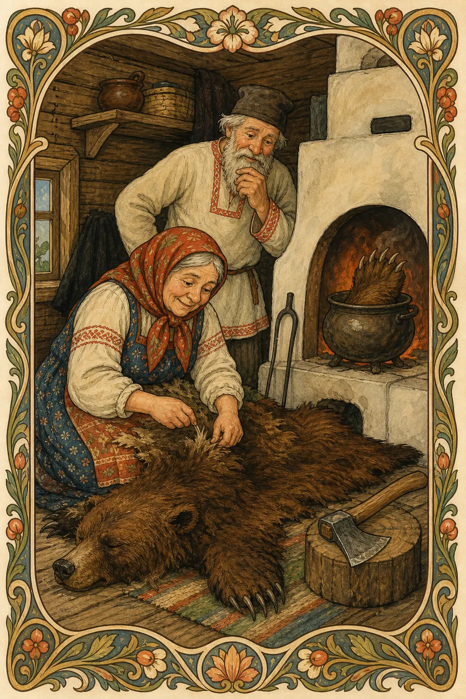
Оценка отсутствует · Чтение: 3 мин чтения
Персонажи: старик, старуха +1
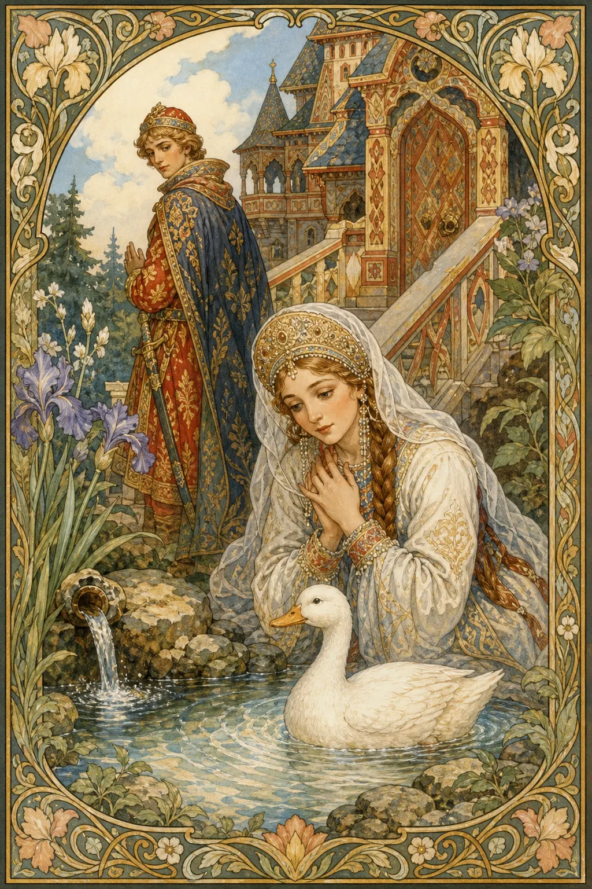
Оценка отсутствует · Чтение: 5 мин чтения
Персонажи: княгиня, князь +1

Оценка отсутствует · Чтение: 6 мин чтения
Персонажи: царевна, серая утица +1
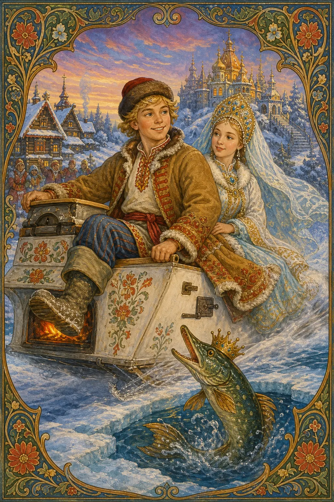
Оценка отсутствует · Чтение: 10 мин чтения
Персонажи: Емеля, щука +1
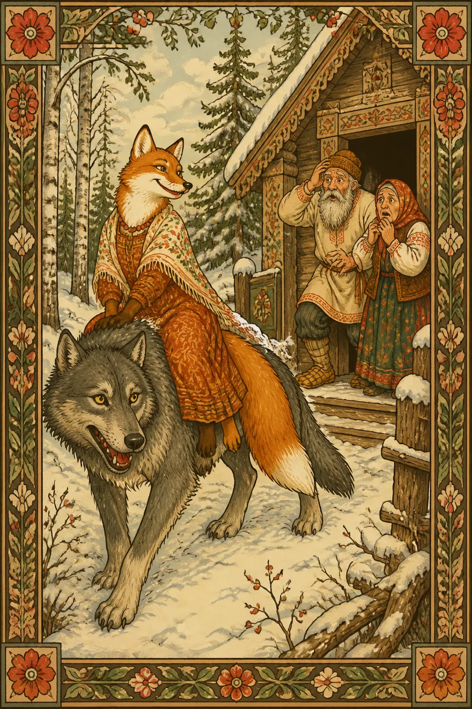
Оценка отсутствует · Популярность: Очень высокая · Чтение: 3 мин чтения
Персонажи: Лисичка-сестричка, волк +2
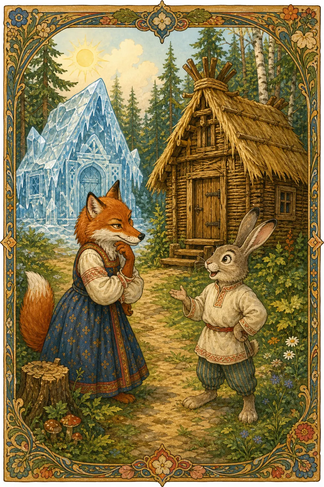
Оценка отсутствует · Популярность: Высокая · Чтение: 3 мин чтения
Персонажи: заяц, лиса +4

Оценка отсутствует · Популярность: Высокая · Чтение: 2 мин чтения
Персонажи: лиса, журавль
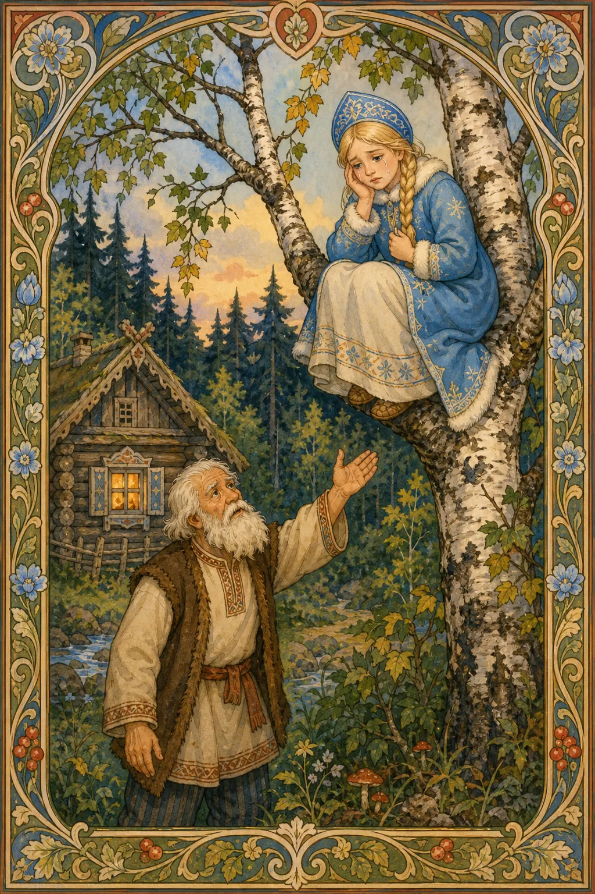
Оценка отсутствует · Популярность: Средняя · Чтение: 2 мин чтения
Персонажи: Снегурушка, дедушка +4

Оценка отсутствует · Популярность: Высокая · Чтение: 3 мин чтения
Персонажи: кот Котофей Иванович, лиса +3

Оценку нужно обновить · Популярность: Очень высокая · Чтение: 3 мин чтения
Персонажи: падчерица, мачеха +3

Оценку нужно обновить · Популярность: Высокая · Чтение: 3 мин чтения
Персонажи: падчерица, отец +5
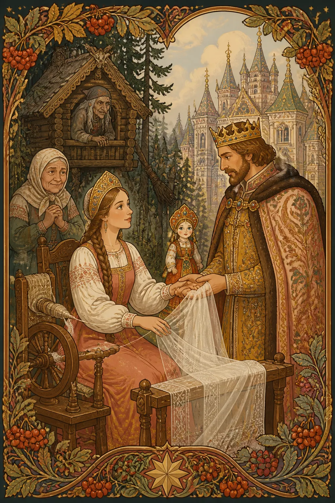
Оценка отсутствует · Популярность: Очень высокая · Чтение: 3 мин чтения
Персонажи: Василиса Прекрасная, волшебная куколка +3